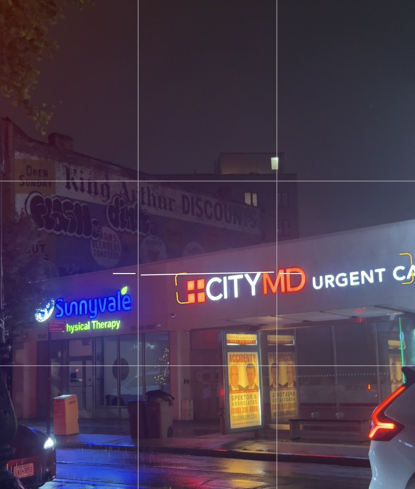
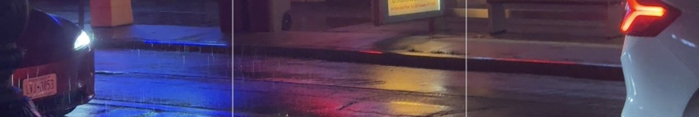
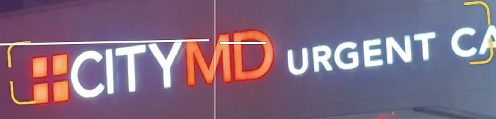
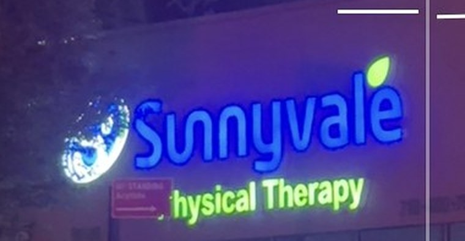
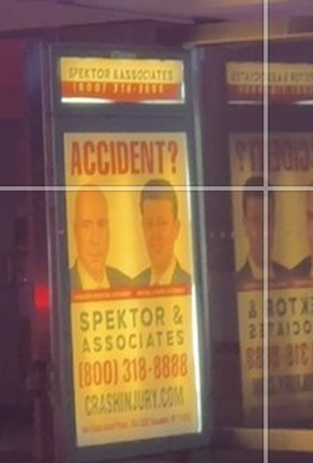
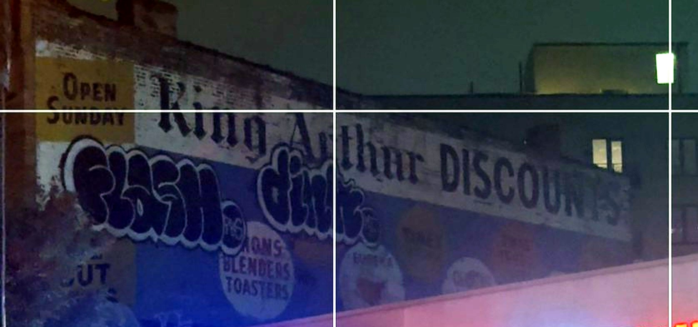

Every picture in this book is a crop of one photograph, taken at 2x zoom on a phone, on a wet weeknight, from the south sidewalk of Myrtle Avenue. The camera app's focus bracket had locked onto the letters MD. The rule-of-thirds grid is still on. I left it. This is a book about lines somebody else drew.
Set in Anton (display), Source Serif 4 (text) and IBM Plex Mono (data). Laid out at A5 and printed two-up on A4 sheets, duplex, flipped on the short edge, folded once, stapled twice, on an office inkjet that has never been asked to do this before.
Facts were checked against public records, local newspapers, city agency reports and company press releases in September 2026. Where the record ran out, the text says so. Sources are listed on page 23. Corrections and memories, especially of King Arthur Discounts, are wanted.
The building in the photograph is in Ridgewood, Queens. It is three blocks from Brooklyn. Until 1982 the Post Office disagreed: this address was Ridgewood, Brooklyn, N.Y. 11227, and before ZIP codes, Ridgewood, Bklyn 27. Bushwick is where you came from to get here, and where the mail thought you still were. The title keeps the old mistake on purpose.
First edition, September 2026. Made for the shelves at Printed Matter and for whoever is waiting for the Q55. Text and photograph © the author. Company and brand names belong to their owners and appear here as history.
A FIELD GUIDE TO ONE PHOTOGRAPH, ITS FOUR BUILDINGS AND ITS ONE BUS SHELTER, WITH THE TWO BLOCKS IT TAKES TO WALK THERE FROM THE BOROUGH LINE.
| p. | |
|---|---|
| 4 | The title is a lie the Post Office told |
| 6 | The Avenue: plank road, el, trolley, bus |
| 8 | Block One: Wyckoff to St. Nicholas |
| 10 | Block Two: St. Nicholas to Cypress |
| 12 | Block Three: the taxpayer, 1931 |
| 14 | 56-26: Mandee, then CityMD |
| 16 | 56-30: Sunnyvale, and the accident economy |
| 18 | 56-16: Rainbow, then Wonder |
| 20 | The wall: King Arthur Discounts |
| 22 | The shelter |
| 23 | Afterword, acknowledgements, sources |
Stand on the south sidewalk of Myrtle Avenue just past Cypress Avenue and look north. You are in Queens. The building across the street, the low one with the blue physical-therapy sign and the red urgent-care sign, is in Queens. The wall behind it, with a king's name painted on it, is in Queens. For most of the twentieth century your mail would have said otherwise.
The border here was never obvious. The English settled Ridgewood and the Dutch settled Bushwick in the 1600s, and the two towns argued about the line between them for so long that, in the mid-1700s, a boulder was hauled into place to settle it. Arbitration Rock is still there, in the yard of the Onderdonk House on Flushing Avenue. It did not settle much. In the 1920s the city redrew the Brooklyn–Queens line as a zigzag that follows Wyckoff, St. Nicholas, Cypress and Gates Avenues and Menahan Street, which is why the borough boundary on a map of this neighborhood looks like a staircase.
The Post Office ignored the staircase. Ridgewood and Glendale were served out of the Bushwick station, so they carried a Brooklyn address: Ridgewood, Bklyn 27, later ZIP 11227, shared with Bushwick and Wyckoff Heights. At the turn of the century merchants liked it that way. Brooklyn was a city; Queens was farms.
The borough boundary on a map of this neighborhood looks like a staircase.
Then came the night of July 13, 1977. The lights went out across the city and, along Broadway in Bushwick, under the el, thirty-five blocks of stores were looted: 134 shops broken open, 45 of them burned. By one account all of Bushwick had fourteen police officers on duty. Wire-service photographs of the looting ran in newspapers around the country, and Bushwick became, for a generation, a byword. Many of the burned lots stayed empty into the 1980s.
Ridgewood, two miles up Myrtle Avenue, decided it did not want to share a return address with that. In February 1979 the neighborhood's freshman congresswoman, Geraldine Ferraro, met Postmaster General William Bolger, who told her that if she could show that seventy percent of residents wanted a Queens ZIP code, he would give them one. Her office mailed ballots. Ninety-three percent of those returned said yes. In 1982 the Postal Service dissolved 11227, redrew 11237 to stop at the borough line, and created 11385 for Ridgewood and Glendale alone.
So the photograph on the cover was taken in 11385, in a place that spent its first eighty years, on paper, in Brooklyn. Three blocks in Bushwick is what the envelope would have said. It is also, if you count from the borough line at Wyckoff Avenue, exactly how far you have walked: Wyckoff to St. Nicholas, St. Nicholas to Cypress, Cypress to here.
A one-story building, 56-14 to 56-30 Myrtle Avenue, built 1931, five storefronts, two of them lit: Sunnyvale Physical Therapy (56-30) and CityMD Urgent Care (56-26).
A painted wall on the walk-up behind it: OPEN SUNDAY · King Arthur DISCOUNTS · irons, blenders, toasters, Eureka, Timex, under two graffiti throw-ups.
A taller apartment house further back, right, with a rooftop bulkhead and one lit window.
A bus shelter for the Q55, carrying an advertisement that asks, in capital letters, ACCIDENT?
Two cars, a fire hydrant, three trash cans, a wet street, and the reflection of all of the above.
Myrtle Avenue is older than the neighborhood it runs through. It left Brooklyn as a toll road and reached Ridgewood as a place farmers drove cattle and cabbages toward the ferries. Everything else in this book sits on top of that fact.
The Brooklyn City Railroad opened a horsecar line on Myrtle in 1854. The cars were electrified in 1893. Above them, from 1888, ran the elevated: the Myrtle Avenue El reached Broadway on April 27, 1889, and Wyckoff Avenue on July 20 of the same year. In 1906 it was pushed on to Lutheran Cemetery at Metropolitan Avenue, and this is the detail that explains the open sky in the photograph. East of Wyckoff the el did not follow Myrtle. It turned onto Palmetto Street, one block over, and ran on a private right-of-way from there. Myrtle Avenue in Ridgewood was never under the iron. That is why it could become a shopping street with sunlight, while the Brooklyn stretch spent eighty years in the dark and was finally freed of its el in October 1969.
The trolleys went next. The Board of Estimate voted on June 30, 1949 to motorize the Myrtle Avenue line. Buses replaced streetcars in Brooklyn on July 17, 1949 and on the Ridgewood stretch on April 26, 1950. The rails stayed in the asphalt until April 1955, when the avenue was repaved. On December 11, 1988 the eastern half of the route was relabeled the Q55; the Brooklyn half kept the name B54. The shelter in the photograph is a Q55 stop, Ridgewood to Richmond Hill via Myrtle Avenue, Local.
Myrtle Avenue in Ridgewood was never under the iron.
Retail followed the rails. The Woolworth's that opened at 57-37 Myrtle in the 1930s, one block east of the photograph, was such an event that when a second Woolworth's opened in the neighborhood in 1969 the Ridgewood Times put it on the front page of the July 24 issue, four days after the Moon landing. The two stores ran side by side for more than twenty-five years and closed in 1993 and 1997. The first one is now a Children's Place.
The street's current management arrived in July 1988. The Myrtle Avenue Business Improvement District, one of the city's early BIDs, runs from Wyckoff Avenue to Fresh Pond Road, covers more than 300 businesses, and spends about half a million dollars a year on sweeping, planters, holiday lights and a business directory. Its longtime executive director, Ted Renz, retired in June 2025, the same month a plaza on the avenue was co-named for the BID's late founder. Laura Seidel took over that autumn.
You cross into Queens at Wyckoff Avenue, under the M train, at a junction that has been the neighborhood's front door since the nineteenth century.
Myrtle, Wyckoff and Palmetto Street meet here in a six-way intersection that trolley lines used as a terminus until the 1940s. The el station above it opened with the extension in 1889. Underneath, since 1928, the Canarsie line has stopped at Myrtle–Wyckoff, and the transfer between the two is the reason the corner has had crowds on it for a hundred years. Today the plaza at the mouth of Myrtle is car-free and full of vendors. The B54 bus from downtown Brooklyn ends here; the Q55 begins.
Walk east. On the north side, at 54-30, is a construction fence, or by the time you read this a new building. This is where the RKO Madison stood. It opened on November 24, 1927, built by B.S. Moss for the Keith-Albee circuit, designed by Eugene De Rosa, and named for James Madison and for Madison Street. It had more than 3,000 seats, a foyer two stories high with crystal chandeliers, marble stairs and a vaulted ceiling, and an orchestra pit with three separate elevators, one each for the orchestra, the piano and the Wurlitzer organ. Neighborhood theaters did not get three elevators. This one did.
3,000 seats. Three elevators in the pit. One for the Wurlitzer.
Between Wyckoff and St. Nicholas Avenues, on this one stretch, there were once several theaters. The Madison was the grandest. Like most of the palaces it lost its audience to television and its building to time. It closed as a cinema decades ago, and the shell was finally demolished in early 2021. Nothing in the photograph on the cover will ever have a Wurlitzer.
The lesson of Block One is the lesson of the whole avenue. The transit came first, in 1889. The commerce came with it. The buildings that housed the commerce were designed to be temporary and turned out to last ninety years, or were designed to last forever and lasted ninety-four. What survives on Myrtle Avenue is the street itself, the right-of-way, the width between the curbs. Everything above the sidewalk is negotiable.

The trolley rails stayed buried in Myrtle Avenue until April 1955, five years after the last car ran. On some blocks of Brooklyn, rails still surface when the asphalt is milled. On this stretch they were pulled. The cobbles that carried them are somewhere under the reflection.
The second block begins at a triangle and ends at a triangle. Myrtle Avenue cuts diagonally through the Bushwick street grid, so nearly every intersection here is a wedge, and wedges make good places to put a sign.
At the western corner, 55-05 Myrtle at St. Nicholas Avenue, Harry and Dora Greenstein opened Triangle Furniture in the late 1920s and named it for the shape of the lot. Greenstein hung a movie marquee over the door. His theory was that a marquee put people in the mood of a night out, and people in that mood buy sofas. In the early 1930s there were twenty-nine businesses in Queens called Triangle something. The store later became Selinger Furniture and stayed a furniture store long enough that the neighborhood forgot it had ever been called anything else.
Mid-block, at 55-27, is the reason the marquee was a good idea. The Ridgewood Theatre opened on December 23, 1916 with "6 Big Acts of Vaudeville and Feature Photo Plays," designed by Thomas Lamb, the architect who would go on to draw the Capitol and the Ziegfeld. It showed movies without interruption for ninety-one years. It closed in 2008, the longest continuously operating cinema in the country at the time, and the city landmarked its façade in January 2010.
Wedges make good places to put a sign.
What happened next is the template for everything on the next block. The theater was not demolished. It was hollowed out and rebuilt in 2016 as five stories of apartments, fifty-four of them, over 13,000 square feet of ground-floor retail, with Lamb's terracotta front kept on like a mask. A listing site files the address under "Bushwick." The mail knows better now, but the brokers have gone back to 1979.
The block ends where Cypress Avenue and Cornelia Street run into Myrtle from opposite sides and leave a triangle of land between them. It has had four names. On Memorial Day 1923 the neighborhood dedicated a war memorial here, an eleven-foot bronze cylinder by the sculptor Anton Schaaf, topped with a globe, with reliefs of a soldier, a sailor and an airman for the Ridgewood men who did not come back from France. Residents called the plot Landlord Square, for reasons no one wrote down. In 1936 the Board of Aldermen tried to name it Times Triangle, after the Ridgewood Times building across the street. In 1985 Mayor Koch renamed it for Carl E. Clemens, the paper's owner and the neighborhood's fixer, which was unusual because Clemens was alive and standing there. The Parks commissioner shortened it to Clemens Triangle in 1987. Clemens died in 1989.
Cross Cypress Avenue and you are on the third block, and in the photograph.
The building in the photograph was built in 1931 to lose as little money as possible. It has done so for ninety-five years, which makes it a success.
New York has a name for a building like this: a taxpayer. A taxpayer is a one- or two-story commercial structure put up on a lot to generate just enough rent to cover the property tax while the owner waits for the land to be worth something taller. It is a placeholder. The point of a taxpayer is that it will be torn down. In 1929, seven percent of the building plans filed for Manhattan's Third, Lexington and Madison Avenues were for buildings of one to three stories. By 1933 every plan was. The Depression made the whole city a taxpayer, and then the taxpayers refused to leave.
This one runs from 56-14 to 56-30 Myrtle Avenue, on the north side of the block just east of Clemens Triangle, one story, brick, roughly 20,000 to 29,000 square feet depending on which database you believe, tax class K1 (one-story retail), zoned C4-3A. The city's assessor puts its market value at about $4.3 million, which is the land talking, not the building. It has a basement for storage, a flat roof that the wall behind it uses as a stage, and five storefronts, of which the photograph shows the two on the east end.
A placeholder. The point of a taxpayer is that it will be torn down. This one is ninety-five.
THE FRONTAGE, WEST TO EAST, AS OF SEPTEMBER 2026
Pink: medical. Yellow: food, delivered. Grey: waiting. A building put up to sell dry goods in the year the Empire State Building opened now sells prescriptions, X-rays, range-of-motion and Bobby Flay.
Read the frontage left to right and you are reading the last forty years of the American Main Street in five doors. Two clothing chains that sold cheap dresses to women who took the bus are gone: one replaced by a ghost kitchen that exists mostly on a delivery app, the other by an urgent-care clinic owned, at the moment of writing, by a private-equity firm that is trying to sell it. Between them is a pharmacy. At the end is a physical-therapy practice whose patients are, in part, delivered to it by the lawyer on the bus shelter out front. The storefront that was designed to be a store is the one that is empty.
None of this is a complaint. A taxpayer does not have opinions about its tenants. It was built to hold whatever the street needed until the street needed a tower. Ninety-five years later the tower has still not come, the theaters on both sides of it have gone, and the cheapest building on three blocks has outlived the most expensive ones. The following pages take the tenants one door at a time.

Before the red letters, this door belonged to Mandee, a chain of junior women's clothing stores founded in 1948 by three brothers named Mandelbaum and run for sixty-five years out of Totowa, New Jersey.
Mandee was the kind of store that a shopping street like Myrtle Avenue was built for: moderately priced, mall-adjacent, aimed at teenagers with bus fare. Its parent, Big M Inc., had more than a hundred Mandee, Annie Sez and Afaze stores across New Jersey, Long Island and Brooklyn when Hurricane Sandy flooded enough of them in October 2012 to break the company. Big M filed for Chapter 11 in January 2013, blaming the storm, and was bought for $22.5 million by YM Inc. of Toronto, which said it would keep most stores open. It closed the Annie Sez banner in 2018 and kept thinning Mandee. By the time CityMD signed for this space, the Ridgewood Mandee was a "CLOSED" tag on a review site.
Five ultimate employers and one desk.
CityMD opened here on Monday, January 24, 2022, its eighteenth location in Queens. The company had been founded in 2010 by Richard Park, an emergency-room physician, on the observation that New Yorkers would rather pay a copay to be seen in twenty minutes than wait five hours in an ER for a sprained ankle. That was correct. By 2017, when Warburg Pincus bought a majority stake, there were 68 clinics. In 2019 CityMD merged with Summit Health, a New Jersey physician group, with Park as vice chairman.
Then it became a line item in someone else's strategy. On November 7, 2022, ten weeks before the Ridgewood clinic's first birthday, VillageMD, a primary-care company majority-owned by Walgreens, agreed to buy Summit Health-CityMD for $8.9 billion, with money from Walgreens and from Cigna's Evernorth. The deal closed January 3, 2023. Walgreens' theory was that a drugstore chain could own the doctor's office too. Within eighteen months Walgreens was reporting a nearly six-billion-dollar quarterly loss, most of it from the healthcare bet, and announcing the closure of more than 160 VillageMD clinics. In 2025 Walgreens itself was taken private by Sycamore Partners in a $23.7 billion deal, approved by shareholders on July 11 and closed in August, and split into five companies. VillageMD, which still includes Village Medical, Summit Health and more than 185 CityMD clinics, was one of them. Sycamore has said it intends to sell it. As this book went to press, no buyer had been announced.
So the red MD in the photograph belongs, in order, to a taxpayer, to a landlord, to a clinic, to a physician group, to a primary-care roll-up, to a private-equity fund, and to whoever buys it next. The nurse who takes your blood pressure has had, since she started, five ultimate employers and one desk.

The last door on the block is the quietest business in the photograph and the one whose economics are most visible, if you know where to look. Look at the bus shelter.
Sunnyvale Physical Therapy PLLC is a two-office practice, this one and another at 116-24 Queens Boulevard in Forest Hills, founded and led by Remonda Abdel-Shahid, a physical therapist with a master's degree from Cairo University and a doctorate from Dominican College. The staff speak English, Spanish, Russian and Arabic, which on this avenue is not a marketing line but a headcount. The practice advertises hands-on treatment, dry needling, and a list of insurance it accepts: Medicare, Medicaid, commercial plans, workers' compensation, and no-fault.
That last word is the hinge. New York's no-fault law, on the books since 1974, requires every car-insurance policy to pay the medical bills of anyone hurt in a crash, up to $50,000 in basic coverage, regardless of who caused it. Unlike almost every other kind of insurance in the state, no-fault will not pay for physical therapy on a patient's say-so; it requires a physician's prescription first.
The shelter faces the clinic. Nobody planned this.

So a crash produces a chain. The driver calls a lawyer, whose fee is a share of the eventual settlement. The lawyer needs a record of injury that will hold up, and refers the client to a physician, who writes the prescription. The physician refers the patient to physical therapy, where each visit is billed to the no-fault carrier and where the therapist's goniometer, which measures range of motion in degrees, produces the numbers the lawyer will put in the demand letter. Every link in that chain is legal and most of it is useful; people who are hurt need lawyers and therapy. But it is a supply chain, and its raw material is collisions on streets like this one.
The advertisement on the shelter is for Gregory Spektor & Associates, a Queens-based personal-injury firm with more than seventy employees, which advertises on bus shelters like this one and answers a toll-free number. Its slogan is a question. The clinic behind it is one of the answers. Nobody planned this; the shelter's advertising panel is sold by a French street-furniture company, the clinic's lease was signed by a landlord who wanted rent, and the law was written in Albany fifty years ago to keep small claims out of court. The photograph simply catches all three in a row, in the rain, which is when most of the accidents happen.
Since 2006 New Yorkers can see a physical therapist without a referral for up to ten visits or thirty days. No-fault is the exception: no prescription, no payment. The exception is why the lawyer's phone number is a better business address than the clinic's door.
Two doors west of the photograph's edge is the storefront that best explains the storefronts inside it. For decades it was a Rainbow. Since September 18, 2025, it has been a kitchen with no dining room and twenty restaurants in it.
Rainbow Shops was founded in 1935 by Irving Arthur Swarzman, Austrian-born, Brooklyn-raised, and is still privately held and still headquartered in East New York, one of the few large apparel chains run from the borough it sells to. It had about 1,300 stores in 2021, nearly all of them on streets like Myrtle Avenue, selling women's, plus-size and children's clothing at prices that assume the customer is paying cash. Rainbow at 56-16 was, with Mandee at 56-26 and a Torrid across the street at 56-27, part of a run of women's clothing stores that made this block a place to shop on a Saturday. Torrid is closed. Mandee is CityMD. Rainbow's own store locator still listed the Ridgewood store after it had shut.
Wonder, the tenant that replaced it, was founded in 2018 by Marc Lore, who had sold two companies to Amazon and Walmart and wanted to do to dinner what those companies did to everything else. A Wonder is a single kitchen that cooks the menus of a couple of dozen licensed restaurant brands, several of them attached to television chefs (Bobby Flay, Michael Symon, Marc Murphy), for delivery and pickup, with a few stools if you insist on eating there.
The storefront that is still a store is the one with a For Lease sign.
The Ridgewood Wonder was the company's third in Queens after Astoria and Jackson Heights. Its opening was announced with the usual ribbon and met, on the neighborhood's Reddit page, with dozens of comments arguing that a billionaire's delivery hub in a former Rainbow was the exact shape of what was happening to Ridgewood. They were not wrong about the shape. They were arguing on the block where the argument has been going on since Woolworth's.
Put the two doors together, 56-16 and 56-26, and the taxpayer has done a quiet conversion. In 2015 both storefronts sold clothing to people standing in them. In 2026 one sells medicine and the other sells food to people who are somewhere else. The building did not change. What it is for did. This is the trend the whole country's Main Streets are on, and this block is a clean sample: a bank of storefronts built for dry goods, now leased for services (a clinic, a pharmacy, a physical therapist) and logistics (a kitchen that is really a loading dock). The storefront that is still a store is the one with a For Lease sign.
There is a second, quieter trend under it. Ridgewood's registered rent-stabilized apartments fell from 6,228 in 2019 to 2,149 in 2021, a drop of two-thirds against about ten percent citywide, much of it through "substantial rehabilitation" claims that take buildings out of the system. The apartment house at the back of the photograph, with its one lit window, is the kind of building that number describes. As Bushwick's rents rose, renters crossed Wyckoff Avenue, and the neighborhood that had voted 93 percent to stop being Brooklyn became, in the real-estate papers, "Quooklyn." The taxpayer's tenants are who those renters call when they get sick, and who feeds them at 10 p.m.

This is the one building in the photograph that would not give up its history, and the one that says the most.
The sign is painted on the flank of the walk-up that stands behind the taxpayer, facing Myrtle Avenue across the taxpayer's flat roof. That geometry is the first fact: whoever paid for it knew the roof would stay low, so the sign was painted after 1931, into a view the one-story building guaranteed. The blackletter "King Arthur," the sans-serif DISCOUNTS, the brand medallions and the yellow OPEN SUNDAY panel are the vocabulary of the discount appliance house of the 1960s through the 1980s: a store that sold irons, blenders, toasters, Eureka vacuum cleaners and Timex watches at a markdown and shouted about it. No directory, newspaper archive, review site or nostalgia forum that could be reached for this book records a King Arthur Discounts on Myrtle Avenue. It is gone from everything except the brick.
Gone from everything except the brick.
The sign still says three things. OPEN SUNDAY was a boast with legal weight. New York's Sunday-closing laws, descended from colonial Sabbath statutes, made most retail on Sunday a misdemeanor until the Court of Appeals threw the law out as hopelessly vague in 1976. A store that painted OPEN SUNDAY in a yellow box was advertising a freedom that was either brand new or, for years before that, a gamble. That dates the sign to the 1970s or after, at least in this coat of paint.
The medallions are the descendants of the "privilege sign," the arrangement by which a national brand paid a sign painter to put its name on a merchant's wall in exchange for a line about the merchant. Here the relationship has flipped: the merchant is the headline and the brands are the supporting cast, but they are there because they sold. Timex and Eureka are the point. Nobody walks into King Arthur for King Arthur.
The graffiti is the newest layer and the only one still being maintained. FLASH and DINK are throw-ups, two-color bubble letters done fast, and they are placed exactly where the sign painter left flat color. Every writer knows a good wall when one is offered. The wall has now carried at least four generations of lettering: the brick, the discount house, the writers, and the streetlight's yellow, which is the only one that gets refreshed nightly.
Wall-painted ads survive because the lead-based paints that the "wall dogs" used before the 1950s outlast the businesses by decades. This one is younger than that and is fading faster, which is why it is in this book. If you remember King Arthur Discounts, who ran it, what it smelled like, whether the king was on the bags, the author would like to know. The sign is a question. So far the only answer is on the bus shelter.
The newest structure in the photograph is the bus shelter, and it is the only one owned by a company in Paris.
On May 19, 2006 the city's Department of Transportation signed a twenty-year, $1.397 billion franchise with Cemusa, a Spanish street-furniture company, to design, build and maintain at least 3,300 bus shelters and 330 newsstands, and to sell the advertising on them. The design, by Grimshaw Architects, was meant to be the same everywhere: a glass roof, a stainless frame, a lit panel. Mayor Bloomberg unveiled the first one on December 18, 2006. In exchange for the advertising monopoly, Cemusa promised the city about $1.3 billion in cash and in-kind over the term and, every year, up to 22.5 percent of its panels for the city's own tourism and public-service messages. JCDecaux, the French company that invented the ad-funded bus shelter in Lyon in 1964, took over Cemusa in 2015 and inherited the contract.
Count forward from 2006. The franchise runs out in 2026, the year this book was printed. The shelter in the photograph, the panel with the lawyer on it, the light that makes the panel glow at night, and the right to sell that light are all, at this moment, being renegotiated in an office you will never see. The Q55 will keep stopping here regardless. The Q55 is a public thing. The shelter is a franchise, the ad is a lease, the clinic behind it is an asset, the wall behind that is a ghost, and the building under all of them was built to be temporary in 1931. The street is the only one of them that is not for sale.
Nothing directly. The city put up no money for the shelters; it sold the sightline. Every person waiting for the Q55 is the product. The 22.5 percent of panels reserved for public messages is why, some months, the lawyer is replaced by a reminder to get a flu shot, which you can do at 56-26.
Walking around cities you begin to feel the bones of the people who used to walk the same streets. You see old "Grand Opening!" signs, covered up year after year by new signs, stickers, graffiti — in short, you see the accretion of the anthropocene happening in real time.
When compiling this book I often admit Richard McGuire's seminal graphic novel Here (2014). After you read it you'll understand a little more why I couldn't get this idea out of my head for a decade.
To Victoria Levchenko, my refuge, Carmen Marina Cuervo, my rock, and Yisenia B. Cuervo, the light of my life.
Property: NYC Dept. of Finance assessment data as republished by PropertyShark and LoopNet (56-14–56-30 Myrtle Ave., built 1931, class K1, C4-3A). ZIP codes and the 1977 blackout: QNS "Our Neighborhood, The Way It Was" (Feb 2020); Bushwick Daily, "ZIP Codes and Politics"; Gothamist; NYC Dept. of Records, "Burning Bushwick." Transit: Wikipedia entries for the BMT Myrtle Avenue Line, Q55, B54 and Myrtle–Wyckoff Avenues station; Forgotten New York. Theaters: Cinema Treasures; After the Final Curtain (RKO Madison, Jan 2024); NYC LPC designation of the Ridgewood Theatre (2010); CityRealty. Triangle Furniture: Queens Chronicle, "I Have Often Walked." Clemens Triangle: NYC Parks. BID: Crain's (2003), QNS (June and Oct 2025). Woolworth's: QNS (Dec 2022). Taxpayers: Wikipedia, "Taxpayer (building)." Mandee/Big M: Bloomberg, Chain Store Age, Retail Dive (2013); WWD (2018). CityMD/VillageMD/Walgreens: Summit Health and VillageMD press releases (Nov 2022, Jan 2023); Forbes (Sept 2025); AHA (Mar 2025); QNS and Queens Gazette (Jan 2022). Sunnyvale: practice website, CMS provider records, Zocdoc. Spektor: firm website, PIX11 sponsored profile. No-fault: NY Insurance Law Art. 51; NY Education Law §6731 (direct access). Rainbow: Wikipedia; Wonder: QNS (Sept 2025). Rent stabilization: The City (Mar 2023). Street furniture: NYC Comptroller audits of Cemusa NY (2010s) and JCDecaux North America; NYC DOT press releases (2005, 2006). Sunday laws: People v. Abrahams, 40 N.Y.2d 277 (1976).
Not found anywhere: King Arthur Discounts. If you know, write.
Three Blocks in Bushwick · A5 · 24 pages
One photograph, taken at 2× zoom on a rainy night on Myrtle Avenue, three blocks past the Brooklyn line. In it: a building put up in 1931 to be torn down, a physical-therapy clinic, an urgent-care chain that has changed hands five times, a bus shelter owned from Paris, a lawyer's phone number, and a painted wall advertising a discount store that no record on earth remembers.
This book walks the three blocks from the borough line to the photograph and then takes the photograph apart: the street, the taxpayer, the tenants, the wall, the shelter, and the ZIP code that used to say Brooklyn.
OPEN SUNDAY.
Printed on an office inkjet
Ridgewood, Queens 11385
(formerly Brooklyn 11227)